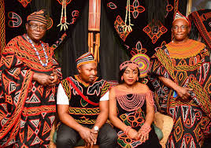

The Atoghu or Toghu is a royal and traditional garment with colorful patterns of the Grassfields peoples (North West and West) in Cameroon. It is regularly chosen as traditional clothing of Cameroon during international ceremonies (2012 Summer Olympics in London). It is worn by Blair Underwood to celebrate her Cameroonian origins and is highlighted by stylist Kibonen Nfi.
